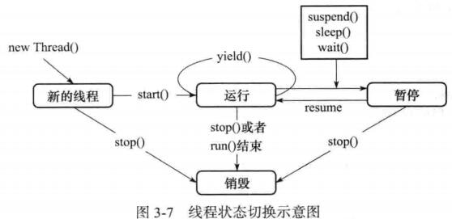

第3章 线程之前的通信
3.1 忙等 Busy-Wait
譬如说，两个线程都在监视一个共享变量，线程A对共享变量进行操作(例如，增加)
，线程B一直在while(true){}代码块中判断共享变量是否到了想要的值（加到了100）。
这样看似好像很简单，也容易理解，但是在while(true){}中如果没到达退出条件，其实是在空转，浪费CPU资源。
向如下这样：1
2
3
4
5
6
7
8
9
10
11
12
13
14
15
16
17
18
19
20
21
22
23
24
25
26
27
28
29
30
31
32
33
34
35
36
37
38
39
40
41
42
43
44
45
46
47
48
49
50
51
52
53
54
55
56
57
58
59
60
61
62
63
64
65
66
67
68
69
70
71
72
73public class BusyWaitTest {
public static void main(String[] args) {
MyList ls = new MyList();
MyThreadA thA = new MyThreadA(ls);
MyThreadB thB = new MyThreadB(ls);
thA.setName("A");
thB.setName("B");
thA.start();
thB.start();
}
}
class MyList {
private List<String> list = new ArrayList<>();
private int cnt = 1;
public void add() {
list.add("Andy" + (cnt++));
}
public int size() {
return list.size();
}
}
class MyThreadA extends Thread {
private MyList list;
public MyThreadA(MyList list) {
this.list = list;
}
public void run() {
super.run();
for (int i = 0; i < 20; i++) {
list.add();
System.out.println("添加了" + (i + 1) + "个元素！");
try {
Thread.sleep(1000);
} catch (InterruptedException e) {
e.printStackTrace();
}
}
}
}
class MyThreadB extends Thread {
private MyList list;
public MyThreadB(MyList list) {
this.list = list;
}
public void run() {
super.run();
while (true) {
if (list.size() == 10) {
System.out.println("list 中有10个元素了！线程B即将退出！");
try {
throw new InterruptedException();
} catch (InterruptedException e) {
e.printStackTrace();
}
}
else {
System.out.println("线程B发现list中有"+list.size()+"个元素了!");
}
}
}
}
3.2 wait/notify()
为了解决Busy-Wait的效率低下，出现了wait/notify机制，wait(),notify(),notifyAll()这三个方法都是Object类的方法。
也就是说，假如我们的共享变量是obj，线程A操作obj，线程B和线程C都在等待obj到某个临界状态。
那么，我们就需要这样调用上述三个方法：
- 在线程B和线程C中，
obj.wait(); - 在线程A中，如果obj的状态已经达到了线程B和线程C期待的临界状态，调用
obj.notify();或者obj.notifyAll();
几个需要注意的点：
以上3个方法必须在获取对象锁的前提下进行，也就是说，要在同步方法/方法块中调用。当控制权执行完wait()方法这一条语句后，当前线程会释放对象锁。而notify()方法这一条语句执行完后
并不会立马释放锁，而是要等到同步块中的代码全部按照顺序执行完成直至退出同步块，对象锁才被释放。在底层实现中，OS会为我们创造一些等待队列，每个obj主体都会有一个等待队列。notify()方法会从队列t头中取一个线程通知它唤醒，进入就绪队列，等待调度器调度。
而notifyAll()则是将所有的等待进程都唤醒到就绪队列。当然，我们可以采取连环通知的方式，以达到通知所有进程。（例如说，线程A通知线程B，线程B又去通知线程C）有几次wait，就需要相应调用几次notify（或者调用一次
notifyAll()），要不然会有线程最终一直等不到资源，造成进程挂起，注意，这里说的是进程挂起！如果调用notify()方法时一个正在等待的进程也没有（该共享对象的等待队列为空），则该命令被忽略。
以下是测试代码:
1
2
3
4
5
6
7
8
9
10
11
12
13
14
15
16
17
18
19
20
21
22
23
24
25
26
27
28
29
30
31
32
33
34
35
36
37
38
39
40
41
42
43
44
45
46
47
48
49
50
51
52
53
54
55
56
57
58
59
60
61
62
63
64
65
66
67
68
69
70
71
72
73
74
75
76
77
78public class WaitNotifyTest {
public static void main(String[] args) {
SimpleList list=new SimpleList();
ThreadA tA=new ThreadA(list);tA.setName("A");
ThreadB tB=new ThreadB(list);tA.setName("B");
ThreadB tC=new ThreadB(list);tA.setName("C");
tC.start();tB.start();tA.start();
}
}
class SimpleList {
private List<String> list = new ArrayList<>();
public void add() {
list.add("Andy");
}
public int size() {
return list.size();
}
}
class ThreadA extends Thread {
private SimpleList list;
public ThreadA(SimpleList list) {
this.list = list;
}
public void run() {
super.run();
for (int i = 0; i < 5; i++) {
list.add();
System.out.println("添加了" + (i + 1) + "个元素！");
try {
Thread.sleep(1000);
} catch (InterruptedException e) {
e.printStackTrace();
}
}
// 通知线程B和/或C，已经有10个元素了
synchronized (list)
{
// list.notifyAll();
list.notify();
list.notify();
}
}
}
class ThreadB extends Thread {
private SimpleList list;
public ThreadB(SimpleList list) {
this.list = list;
}
public void run() {
super.run();
synchronized (list)
{
System.out.println("线程"+Thread.currentThread().getName()+"开始等待list中到达5个元素！");
try {
list.wait();
} catch (InterruptedException e) {
e.printStackTrace();
}
System.out.println("线程"+Thread.currentThread().getName()+"结束等待list中到达5个元素！");
}
}
}
输出如下：1
2
3
4
5
6
7
8
9线程Thread-2开始等待list中到达5个元素！
添加了1个元素！
线程Thread-1开始等待list中到达5个元素！
添加了2个元素！
添加了3个元素！
添加了4个元素！
添加了5个元素！
线程Thread-2结束等待list中到达5个元素！
线程Thread-1结束等待list中到达5个元素！
其实只要掌握下面这个图就OK了：

3.2.1 等待/通知 实战
现在模拟一个备份数据到数据库A和数据库B的执行，开启20个线程，10个备份A，10个备份B。
条件是要保证二者交替备份，即备份到A、备份到B、备份到A、备份到B…这样一直进行下去。
思路
- 任何时候只能有一个线程将数据备份到数据库（无论你是备份到哪个数据库）。所以我们可以写一个DBTool，对这个类对象进行上锁。
- 因为要保证交替备份，所以要有个变量来判断上次是备份了A还是备份了B，这里用个bool变量就行。但是这个共享变量的值在每个线程中会改变，其他线程的执行又依赖于这个取值，所以必须是所有线程都可见，设置为
volatile。
1 | /** |
3.3 join()
join()的作用是等待子线程完成，譬如，线程A负责用户I/O，而线程A又会创建创建子线程B去进行数据计算，可是输出的时候又必须等待线程B计算完毕。
这样就需要在父进程中调用子线程.join()来等待子线程进行完毕。
join()有点和wait()很相似，前者是父进程等待子进程，理论上来说，也可以采用wait/notify机制来完成，等价于childThread.wait(),
把父进程加入到子进程这个对象的等待队列中去，当子进程执行完毕，通知父进程。后者是任意obj都可进行的wait操作。
join的底层也的确是用wait实现的。